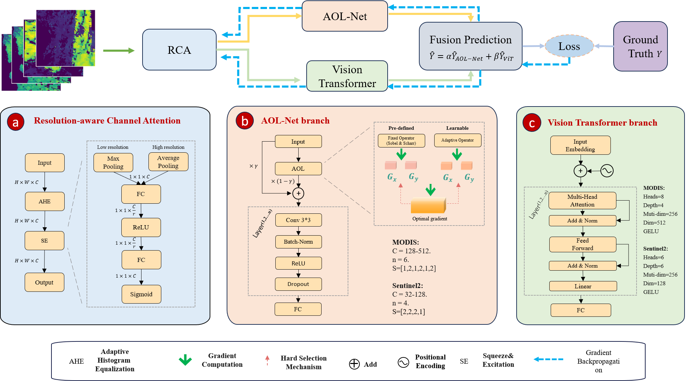
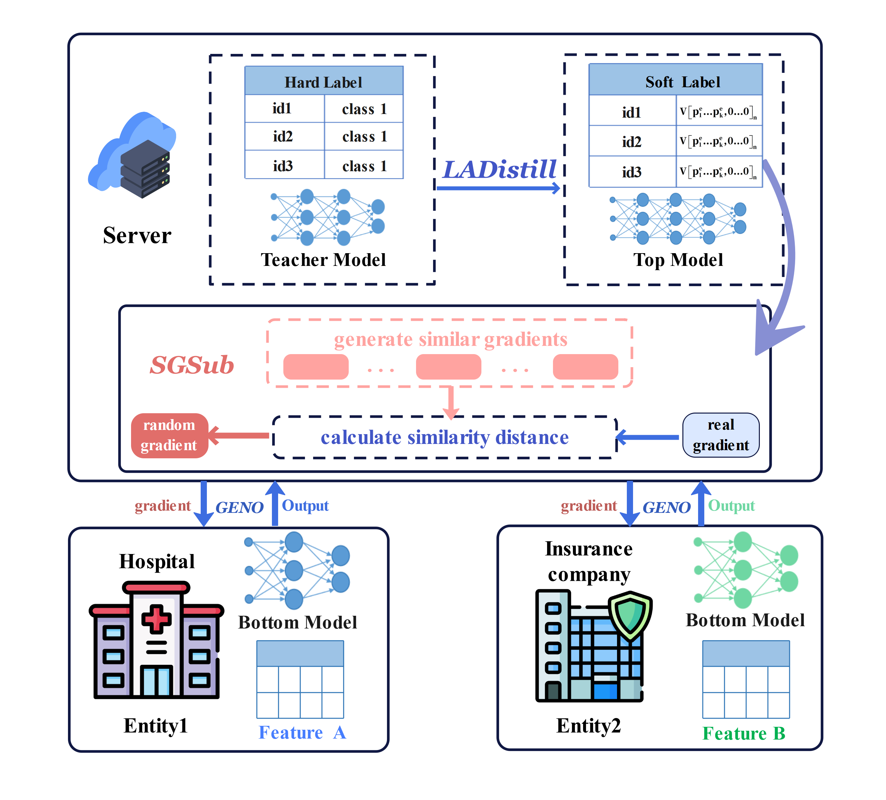

|
I am a Ph.D. student at the
School of Computer Science and Technology, Zhejiang University, supervised by Prof.
Dongxiang Zhang (张东祥). Previously, I studied Computer Science and Technology at
My research focuses on multimodal learning, particularly concept drift, anomaly detection, and AI for Science (AI4Science). Feel free to reach out by email. Email / ORCID / Hugging Face / Google Scholar / Github |
|
Jun. 2026 Named a Graduate Star at Xidian University. Apr. 2026 Our paper DFYP v2.0 was accepted to IEEE TGRS 2026. Dec. 2025 Received the National Scholarship from the Ministry of Education of China. Nov. 2025 Awarded the BYD Scholarship at Xidian University. Aug. 2025 Our paper LADSG was accepted to CollaborateCom 2025 for an oral presentation in Shanghai. Jun. 2025 Our paper DFYP v1.0 was accepted to the ICML 2025 NewInML Workshop. Dec. 2024 Received the National Scholarship from the Ministry of Education of China.
|
|
 |
Paper / Arxiv / Workshop / Code / Dataset ICML NewInML 2025 & IEEE TGRS 2026 A dynamic CNN-ViT fusion framework with spectral channel attention and adaptive operator learning for crop yield prediction. |
|
 |
Paper / Arxiv CollaborateCom 2025 (Oral) A label privacy framework for vertical federated learning based on label-anonymized distillation and similar gradient substitution. |

|
Ant Group
2026.07 - 2026.10
Academic Collaboration Intern Research on Algorithms for Long-Term Health Risk Prediction |
|
Zhejiang University
2026.09 - Present
Ph.D. Student, Computer Science and Technology Research Advisor: Prof. Dongxiang Zhang |
|
|
|
Xidian University
2022.09 - 2026.06
B.Eng. in Computer Science and Technology Research Advisor: Dr. Juli Zhang |
|